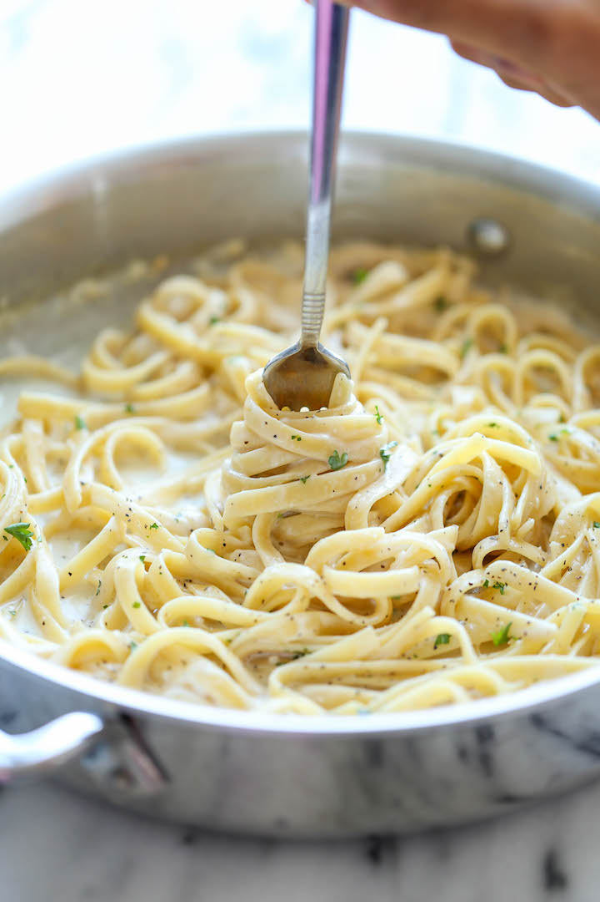

One Pot Creamy Garlic Pasta
Serves: 4
Prep Time: 10 min
Cook Time: 20 min
Calories: 312.5 per serving

Description
The easiest and creamiest pasta made in a single pot – even the pasta gets cooked right in the pan! How easy is that? This meal is very quick and easy to prepare, hits the spot, and makes you very quickly ask for a second helping!
What is better than garlic and parmesan? Not much, I'd wager. This saucy meal will knock you off your feet with its exquisite flavor. It goes great with any type of pasta, however, fettuccine is highly recommended.
Ingredients
-
2 tablespoons unsalted butter
-
4 cloves garlic, minced
-
2 cups chicken broth
-
1 cup milk, or more, as needed
-
8 ounces uncoocked fettuccine
-
Kosher salt and freshly ground pepper, to taste
-
1/4 cup freshly grated Parmesan cheese
-
2 tablespoons chopped fresh parsley leaves
Steps
-
Melt butter in a large skillet over medium high heat. Add garlic and cook, stirring frequently, until fragrant, about 1-2 minutes.
-
Stir in chicken broth, milk and fettuccine; season with salt and pepper, to taste.
-
Bring to a boil; reduce heat and simmer, stirring occasionally, until pasta is cooked through, about 18-20 minutes. Stir in Parmesan. If the mixture is too thick, add more milk as needed until desired consistency is reached.
-
Serve immediately, garnished with parsley, if desired.